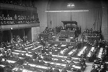

|
La Segunda Guerra Sino-japonesa comenzó en 1937, cuando Japón atacó en profundidad a China desde su plataforma en Manchuria. El 7 de julio de 1937, Japón, después de haber ocupado Manchuria desde 1931, lanzó otro ataque contra China cerca de Pekín, la capital del norte. Los japoneses terminaron de ocupar el norte rápidamente, pero fueron detenidos finalmente en la batalla de Shanghái. Después de combatir alrededor de la ciudad por más de tres meses, Shanghái finalmente cayó ante los japoneses en noviembre de 1937, y la capital del sur, Nankín, cayó poco después. Como resultado, el Gobierno nacionalista chino trasladó su sede a Chongqing durante el resto de la guerra. Las fuerzas japonesas cometieron brutales atrocidades contra los civiles y los prisioneros de guerra en la masacre de Nankín, matando unos 300 000 civiles en un mes. Ni Japón ni China declararon oficialmente la guerra por razones similares: Japón deseaba evitar la intervención de potencias extranjeras, sobre todo el Reino Unido y los Estados Unidos, que era su primer proveedor de acero y hubiera debido imponer un embargo en virtud de las Leyes de Neutralidad vigentes en dicho país; mientras que China temía que la declaración le granjeara la enemistad de las potencias occidentales en la zona. |
|
|  |
Debido a que la guerra en China se prolongaba más de lo planeado, los oficiales nacionalistas del Ejército Guandong reanudaron la lucha por el control de Mongolia y Siberia con Rusia. En la primavera de 1939, fuerzas soviéticas y japonesas chocaron en la frontera de Mongolia. El 8 de mayo, 700 jinetes mongoles cruzaron el río Khalka, río que los japoneses consideraban como la frontera de Manchukuo, pero los gobiernos soviético y mongol consideraban que la frontera se encontraba 35 kilómetros más al este. Las fuerzas mongolas y manchúes empezaron a dispararse, y en pocos días sus patrones soviéticos y japoneses habían enviado grandes contingentes militares, lo que derivó inmediatamente en una lucha, que condujo a una guerra a gran escala que duró hasta septiembre. La creciente presencia japonesa en el Lejano Oriente, fue vista por la Unión Soviética como una amenaza estratégica importante, y los soviéticos temían tener que luchar en una guerra de dos frentes, lo que fue una de las principales razones para el Pacto Ribbentrop-Mólotov con los nazis. Al final, los japoneses fueron derrotados decisivamente por los soviéticos bajo el mando del general Georgi Zhúkov en la batalla de Khalkhin Gol. Después de esta batalla, la Unión Soviética y Japón estuvieron en paz hasta 1945. Japón miró entonces hacia el sur para expandir su imperio, lo que condujo a un conflicto con los Estados Unidos por las Filipinas y el control de las líneas de navegación de las Indias Orientales Neerlandesas. La Unión Soviética se enfocó en el oeste, aunque dejó un importante número de tropas para vigilar la frontera con Japón, pero serían retiradas en 1941. |
| Pagina 2 | Pagina 4 |